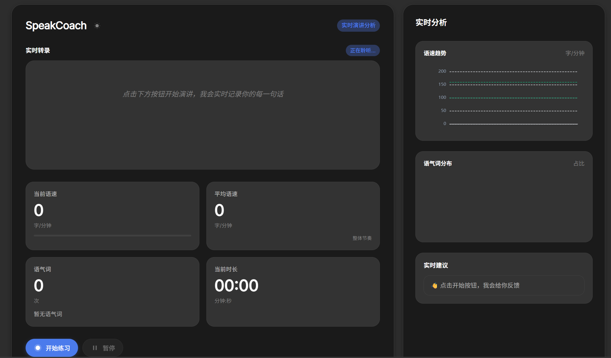
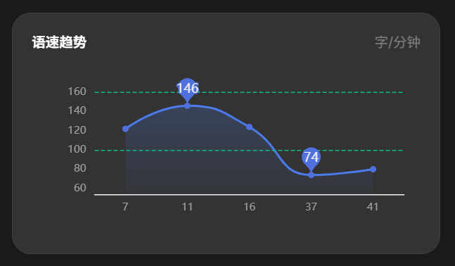
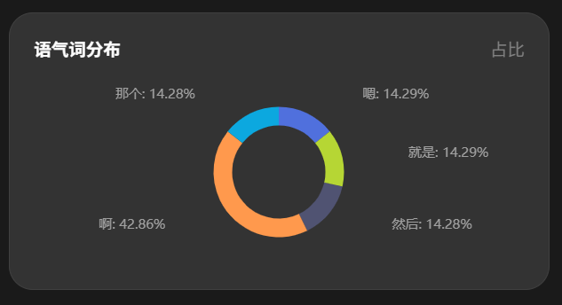
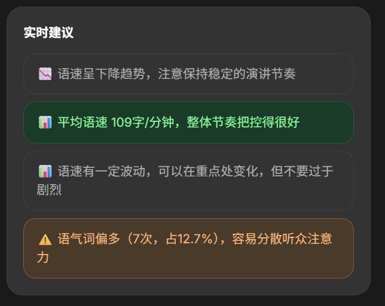

SpeakCoach 是你的私人演讲教练，实时分析语速、语气词， 提供个性化建议，帮助你提升表达力。

专为演讲者和面试者设计的智能分析工具
基于 Web Speech API 的实时语音识别，说完即分析，零延迟反馈。
语速、平均语速、语气词统计、时长监控，全方位评估演讲表现。
语速趋势图、语气词分布饼图，让数据一目了然。
基于实时数据生成个性化建议，告诉你如何改进。
所有处理均在本地完成，不上传任何数据，保护你的隐私。
支持手动切换和跟随系统主题，保护眼睛。
研究表明，大多数听众最容易接受的演讲语速在 100-160字/分钟 之间。
简单三步，提升你的演讲水平
点击"开始练习"，允许麦克风权限，开始演讲。
系统实时转写你的演讲，分析语速、语气词等指标。
查看可视化图表和智能建议，持续改进。
简洁优雅的设计，实时反馈你的演讲表现

语速趋势图清晰展示你的语速变化，两条绿线标识理想范围（100-160字/分）。数据多时自动添加缩放条，方便查看历史记录。

支持10种中文语气词的识别和统计，饼图直观展示分布情况，帮你找出个人口头禅。

基于实时数据生成个性化建议，从语速、语气词、时长等多个维度提供改进方向。
版本 v1.0 · 完全免费 · 无需安装 · 即下即用
下载后解压，用浏览器打开 index.html 即可使用
有任何疑问？这里可能有你想要的答案
首次使用需要联网加载字体和图表库，之后可以离线使用。语音识别是浏览器内置功能，不需要服务器。
不会！所有处理都在本地浏览器完成，麦克风数据永远不会离开你的电脑，完全保护隐私。
推荐使用 Chrome 80+ 或 Edge 80+，需要浏览器支持 Web Speech API。
目前版本专注于中文演讲分析，后续版本会考虑添加英文支持。